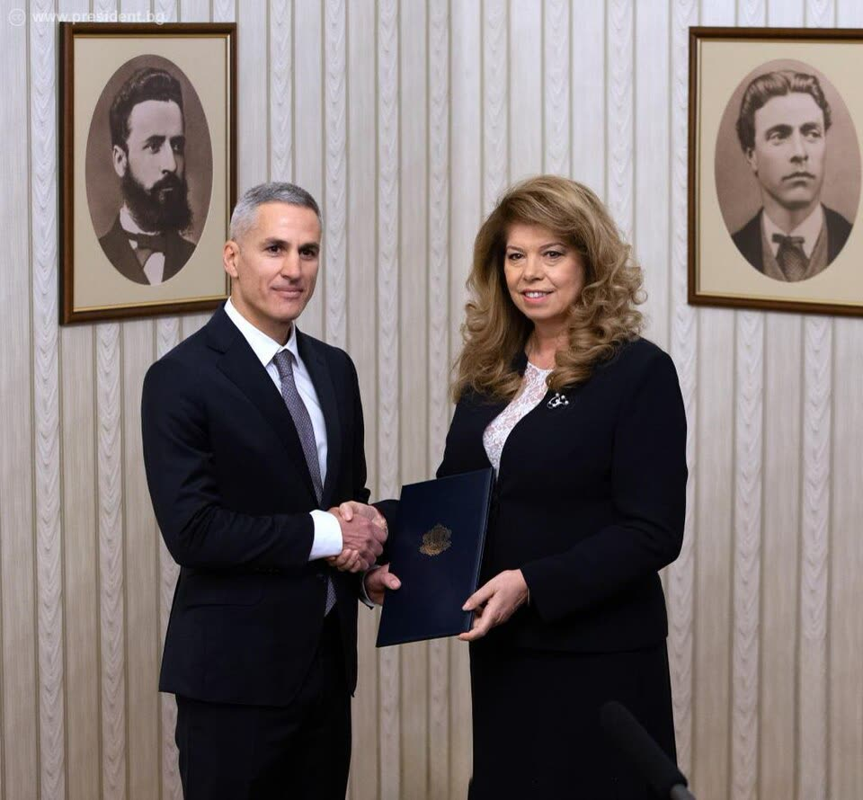

Bulgaria, Iotova eletta presidente col 57,6%: contraria alle armi a Kiev
«Filorussa» dice poco: Iotova vuole trattare sull'Ucraina ma non mette in discussione UE e NATO. Il banco di prova sono le sanzioni, su cui finora tace.
Redazione Contrappunto · aggiornato il 02.11.2026

.jpg){kind=link}
Domenica 1° novembre la Bulgaria, paese dell'UE e della NATO con 6,4 milioni di abitanti, ha eletto il presidente al ballottaggio. Ha vinto Iliana Iotova, 62 anni, ex giornalista della tv pubblica ed eurodeputata socialista: con il 99,95% dei verbali scrutinati la Commissione elettorale centrale le dà il 57,58% (1.093.564 voti) contro il 39,47% di Andrey Gyurov, ex vicegovernatore della banca centrale sostenuto dall'opposizione filoeuropea. Iotova non diventa adesso la prima donna capo di Stato: lo è dal 23 gennaio, quando è subentrata come vicepresidente a Rumen Radev, che si era dimesso per candidarsi alle politiche e oggi è primo ministro. È invece la prima donna eletta. Il presidente bulgaro ha un ruolo soprattutto cerimoniale, ma comanda le forze armate, firma i trattati e può mettere il veto sulle leggi. Dal 1° gennaio la Bulgaria usa l'euro.
Vedi di più: 4 parole spiegate, cosa si racconta
Cosa si raccontaIl racconto più diffuso fuori dalla Bulgaria è quello di una presidente vicina a Mosca: la Frankfurter Allgemeine (centro-destra) apre con «la presidente filorussa», l'AFP la descrive favorevole al dialogo con Mosca e contraria agli aiuti militari a Kiev, Euronews Romania scrive che vuole togliere le sanzioni. In Bulgaria i giornali liberali, Mediapool e Sega, insistono su chi l'ha votata: tre quarti degli elettori di Vazrazhdane, il partito filorusso. Il quotidiano socialista Duma e il popolare 24 Chasa raccontano invece la prima presidente eletta e la «presidente della pace». La presidente della Commissione europea, Ursula von der Leyen, si è congratulata senza alcuna riserva. La TASS, agenzia di Stato russa, ha riportato i dati senza commenti. [Frankfurter Allgemeine Zeitung] [AFP (ripreso dal Kuwait Times)] [Euronews Romania] [Mediapool] [Sega] [Duma] [24 Chasa] [TASS]
- Commissione elettorale centrale (CIK)
- L'organo che organizza il voto in Bulgaria e pubblica i risultati ufficiali, verbale per verbale; i dati del ballottaggio sono quelli al 99,95% dei seggi della mattina del 2 novembre.
- Bulgaria Progressista
- Il partito fondato da Rumen Radev dopo le dimissioni da presidente: alle politiche di aprile ha preso il 44,6% e governa da solo. Ha sostenuto Iotova insieme al Partito socialista bulgaro (BSP).
- Vazrazhdane («Rinascita»)
- Partito di destra nazionalista, euroscettico e filorusso, guidato da Kostadin Kostadinov; al primo turno il suo candidato ha preso il 12,5%, al ballottaggio i suoi elettori hanno votato in gran parte Iotova.
- Coalizione dei volenterosi
- Il gruppo di paesi europei guidato da Francia e Regno Unito che prepara una presenza militare in Ucraina.
- Iliana Iotova, presidente della Bulgaria da gennaio dopo le dimissioni di Rumen Radev, ha vinto il ballottaggio del 1° novembre con il 57,58% contro il 39,47% di Andrey Gyurov: è la prima donna eletta a capo dello Stato.
- È contraria agli aiuti militari a Kiev e chiede trattative, ma non mette in discussione UE e NATO; Ursula von der Leyen si è congratulata parlando di difesa, competitività e indipendenza energetica.
La FAZ la chiama «filorussa», l'AFP favorevole al dialogo con Mosca; Mediapool e Sega ricordano che la spinta in più è arrivata dagli elettori di Vazrazhdane. Il coro regge a metà. Iotova è contro gli aiuti militari a Kiev e vuole trattative: questo è vero. Uscire dall'UE o dalla NATO non lo propone; sull'euro, nel 2025 chiedeva un vero dibattito, ma ora la Bulgaria ci è dentro. Von der Leyen evita l'etichetta, probabilmente perché in Bulgaria governa Radev e a Bruxelles serve Sofia su difesa ed energia. Per noi una voce che chiede di trattare fa l'interesse dell'Europa che paga la guerra. Ma sulle sanzioni a Mosca Iotova non dice niente di chiaro: è lì che si capirà se «filorussa» era un'etichetta o una previsione. [4] [21] [13] [15] [6] [22] [12]
La verifica punto per punto4 passaggi, 23 fonti
Qui sotto ogni cosa scritta sopra, una per una, con le fonti. Confermato: lo dice un documento originale o più fonti lette. Plausibile: lo riportano fonti serie, ma non abbiamo letto l'originale. Discordante: le fonti danno numeri diversi, e diciamo quali. Ipotesi e Opinione sono il nostro ragionamento, separato dai fatti.
Chi ha vinto e come
Al ballottaggio del 1° novembre, con il 99,95% dei verbali scrutinati, la Commissione elettorale centrale dà Iotova e il candidato vicepresidente Kiril Valchev al 57,581% (1.093.564 voti), Gyurov e Georgi Kandev al 39,467% (749.543); il 2,952% ha scelto «non sostengo nessuno». Al primo turno del 25 ottobre Iotova aveva il 34,76% e Gyurov il 31,95%. Secondo gli istituti citati da Sega e Mediapool, al ballottaggio il 76-79% degli elettori di Vazrazhdane che sono andati a votare ha scelto Iotova, il 75% di quelli del GERB (centro-destra) Gyurov. Iotova era presidente dal 23 gennaio 2026, subentrata a Radev (Radio nazionale bulgara). Gyurov ha detto: «Accettiamo i risultati così come sono» (BNT).
Cosa dice davvero su Ucraina, euro e sanzioni
In campagna Iotova ha detto che la guerra non ha soluzione militare, che la Bulgaria non può entrare nella coalizione dei volenterosi (Brussels Signal) e che serve «una coalizione per la pace» (Euronews Romania); l'AFP scrive che, senza mettere in discussione UE e NATO, è contraria agli aiuti militari a Kiev e vuole negoziati. Votando il 1° novembre ha chiesto una Bulgaria «forte in un'Europa forte» ma con «una propria politica estera» (Mediapool). Sull'euro, nel maggio 2025 accusava il ministero delle Finanze di non aver spiegato i rischi e definiva «disonorevole» la campagna contro il referendum proposto da Radev (BNT); dal 1° gennaio 2026 la Bulgaria è nell'euro (BCE). Sulle sanzioni non abbiamo trovato sue dichiarazioni: Euronews Romania scrive che ne sostiene la revoca, ma non riporta sue parole; Brussels Signal ricorda che Radev da presidente le ha sempre criticate.
Perché Bruxelles non la chiama filorussa
Von der Leyen si è congratulata citando sicurezza e difesa, competitività e indipendenza energetica, e ha chiuso con «una Bulgaria forte in un'Europa forte», quasi la stessa formula usata da Iotova al seggio. Il silenzio sull'etichetta si spiega con il peso reale della carica e con quello che Bruxelles chiede a Sofia, più che con un giudizio diverso sulle sue idee.
Ragionamento: Il presidente bulgaro ha poteri soprattutto cerimoniali (Il Post) e la linea la decide il governo di Radev, che ha la maggioranza; la Commissione ha bisogno di Sofia proprio sui temi che von der Leyen elenca. Il politologo Dimitar Ganev (24 Chasa) prevede che Iotova resti nel consenso su UE e NATO, in linea con Radev. Non abbiamo una dichiarazione della Commissione che spieghi la scelta delle parole: è una lettura.
Il nostro punto
Chiedere trattative invece di nuove armi non fa di nessuno un filorusso: fa l'interesse di un'Europa che paga la guerra. Ma una presidente che vuole «una propria politica estera» deve dire cosa pensa delle sanzioni, e finché tace l'etichetta resta in piedi.
Fonti23, tutte con il link
- Избори за президент и вицепрезидент 25 октомври 2026, втори тур: обобщени данни (99,95% dei verbali, 2 novembre ore 7:30) (Commissione elettorale centrale bulgara (ЦИК)) · consultata il 02.11.2026
- Избори за президент и вицепрезидент 25 октомври 2026, първи тур: обобщени данни (Commissione elettorale centrale bulgara (ЦИК)) · consultata il 02.11.2026
- Bulgaria introduces the euro (1 gennaio 2026) (Banca centrale europea) · consultata il 02.11.2026
- Bulgarien: Ilijana Jotowa gewinnt Präsidentschaftswahl (1 novembre 2026) (Frankfurter Allgemeine Zeitung) · consultata il 02.11.2026
- Iliana Iotova leads Bulgarian presidential election — CEC (2 novembre 2026) (TASS) · consultata il 02.11.2026
- European Commission President, Ursula von der Leyen, Congratulated Iliana Iotova on Her Victory in the Presidential Elections (1 novembre 2026) (BNT) · consultata il 02.11.2026
- Йотова: С 30-годишна биография в политиката не се е намерил човекът, който да ми казва какво да правя (2 novembre 2026) (BNT) · consultata il 02.11.2026
- 'We Accept the Results as They Stand', Andrey Gyurov Said Following the Presidential Election Results (1 novembre 2026) (BNT) · consultata il 02.11.2026
- Iliana Iotova is Bulgaria's New President (23 gennaio 2026, con la biografia) (BNT) · consultata il 02.11.2026
- Vice President Iotova: The Big Conversation about What Awaits Bulgarians after the Adoption of the Euro Has Not Taken Place Yet (30 maggio 2025) (BNT) · consultata il 02.11.2026
- Iliana Iotova becomes Bulgaria's first female president (23 gennaio 2026) (Radio nazionale bulgara (BNR)) · consultata il 02.11.2026
- Илияна Йотова: Гласувах за президент на мира (1 novembre 2026) (Mediapool) · consultata il 02.11.2026
- Йотова обра вота от "Възраждане", половината избиратели на ГЕРБ бойкотираха и балотажа (1 novembre 2026) (Mediapool) · consultata il 02.11.2026
- 15 прости въпроса за приказката, че Гюров ще ни вкара във война с Русия (30 ottobre 2026, commento) (Mediapool) · consultata il 02.11.2026
- Илияна Йотова печели балотажа (1 novembre 2026) (Sega) · consultata il 02.11.2026
- След успеха на Йотова премиерът иронизира бъдещи протести (1 novembre 2026) (Sega) · consultata il 02.11.2026
- Димитър Ганев, политолог: Йотова II ще е в рамките на консенсуса ЕС и НАТО, самостоятелна вътре, без конфронтация (2 novembre 2026) (24 Chasa) · consultata il 02.11.2026
- Илияна Йотова решава след сблъсък на мнения, действа с емоция, която не крие (2 novembre 2026) (24 Chasa) · consultata il 02.11.2026
- Илияна Йотова с първи коментар: Гражданите повярваха на политиката на диалог, а не на разделението (1 novembre 2026) (Duma) · consultata il 02.11.2026
- Bulgaria's presidential frontrunners clash over Europe and Ukraine (11 settembre 2026) (Brussels Signal) · consultata il 02.11.2026
- Ukraine war divides Bulgaria as voters elect president (25 ottobre 2026) (AFP (ripreso dal Kuwait Times)) · consultata il 02.11.2026
- Iliana Iotova a câștigat primul tur al alegerilor prezidențiale din Bulgaria (26 ottobre 2026) (Euronews Romania) · consultata il 02.11.2026
- Il primo turno delle elezioni presidenziali in Bulgaria si è concluso senza un vincitore: ora si andrà al ballottaggio (26 ottobre 2026) (Il Post) · consultata il 02.11.2026